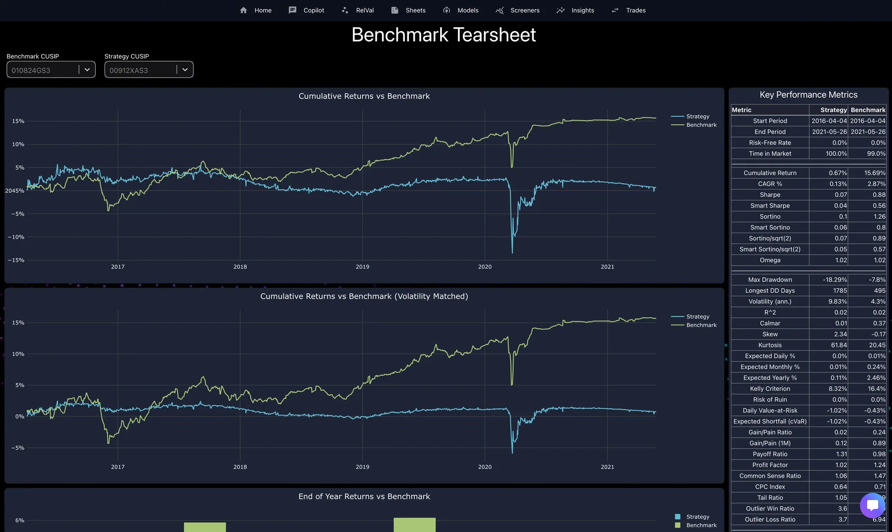
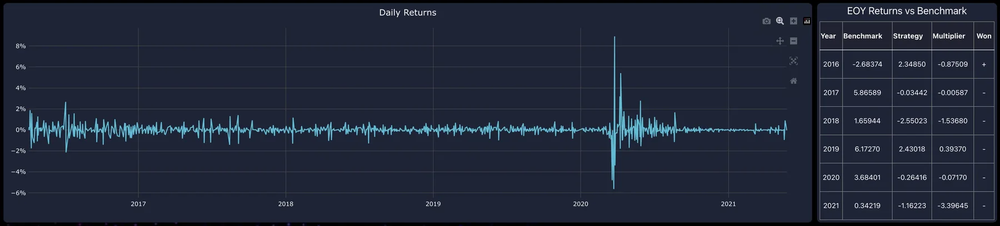
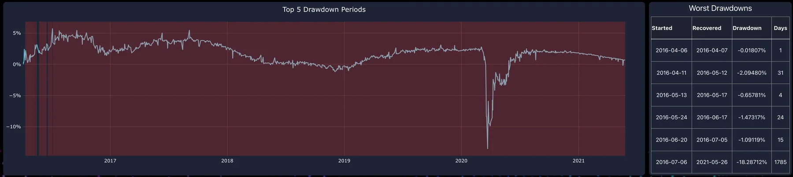
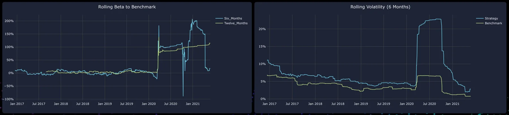
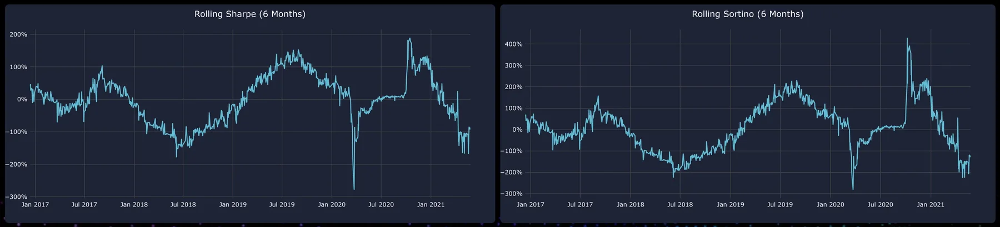
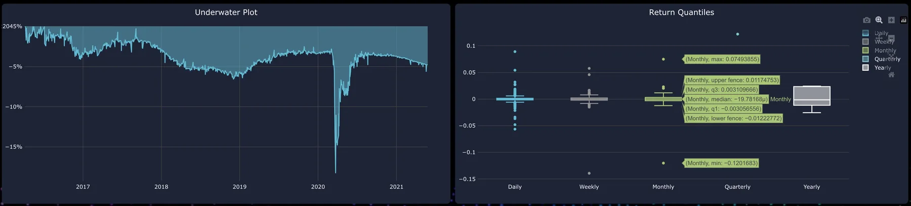
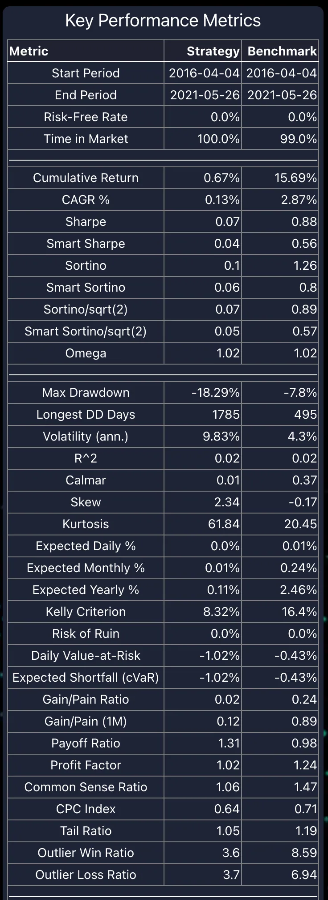
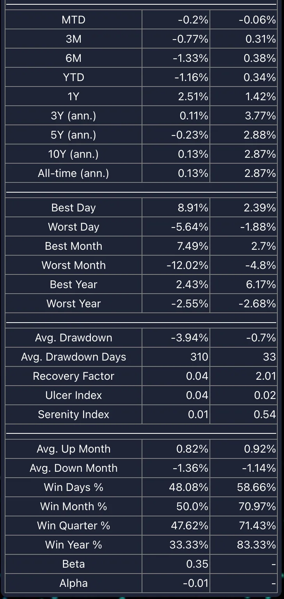
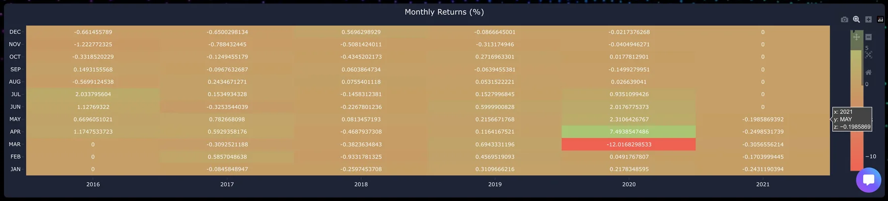

In financial markets, there are two main variables: your strategy and the unpredictable nature of the market. Your strategy must be flawless because even a single mistake can lead to significant losses. Markets are inherently unpredictable and constantly changing, so having a robust strategy alone is not enough. It is crucial to implement the right guardrails, constraints, limits, and boundary conditions to protect your strategy from the volatility and uncertainties of the market.
The output of a generative model-based relative value analysis must be vetted using a tearsheet, and AI guardrails with precise boundaries should be enforced through algorithms. AI Guardrails and Precise Boundaries with Tearsheets can revolutionize value creation in financial markets with unprecedented accuracy.
Generative Model-Based Relative Value Analysis:
When using a generative model for relative value analysis, the output must undergo rigorous validation. A tearsheet is essential for this vetting process, providing a comprehensive overview of the model's performance and highlighting any discrepancies. Additionally, AI guardrails and boundaries enforced through sophisticated algorithms ensure that the model's output aligns with strategic goals and risk management protocols. These tools work together to create a robust framework that enhances decision-making accuracy and protects against unforeseen market shifts.
AI Guardrails:
AI guardrails are automated systems that monitor and manage trading strategies in real-time. These systems can analyze vast amounts of data at incredible speeds, identifying potential risks and making adjustments to keep your strategy aligned with market conditions. They act as a safety net, ensuring that your strategy adheres to predefined rules and limits. This reduces the likelihood of LLM hallucinations and allows for quick responses to market fluctuations.
Precise Boundaries:
Precise boundaries involve setting specific parameters within which your strategy operates. These parameters include risk tolerance levels, stop-loss orders, and profit-taking points. By defining these boundaries, you create a controlled environment where your strategy can execute trades without deviating from its core objectives. This minimizes the impact of market volatility on your investments and helps maintain consistent performance.
Tearsheets:
Tearsheets provide detailed reports on the performance of your trading strategies. They include key metrics such as returns, volatility, drawdowns, and Sharpe ratios. By regularly reviewing these tearsheets, you gain insights into the effectiveness of your strategies and can make data-driven decisions to optimize them further. This continuous feedback loop ensures that your strategies remain relevant and effective in changing market conditions.
Let's delve into the nuances of a modern tearsheet from OpenEXA, such as benchmarking and calculating Greeks to determine the intrinsic value of the asset. Benchmarking involves comparing your strategy's performance against a standard index or peer group to assess its relative success. Calculating Greeks—such as Delta, Gamma, Theta, and Vega—helps in understanding the sensitivity of the asset's price to various factors, providing deeper insights into risk and potential returns.
Benchmarking in tearsheets involves comparing the performance of your trading strategy against a standard reference point, such as a market index or a peer group's performance. This comparison provides a clear context for evaluating the relative success and efficiency of your strategy. By assessing metrics like returns, volatility, and risk-adjusted performance against these benchmarks, you can identify strengths and weaknesses, make informed adjustments, and ensure that your strategy is consistently delivering competitive results in the dynamic financial markets.

Daily returns measure the day-to-day performance of a trading strategy, providing insights into its short-term volatility and consistency. Tracking daily returns helps traders understand immediate market reactions and adjust their strategies accordingly.
End-of-Year (EOY) returns offer a comprehensive view of a strategy's annual performance, highlighting its success relative to market benchmarks. Comparing EOY returns against a benchmark index helps assess long-term effectiveness and competitiveness in the financial market.

Drawdown measures the peak-to-trough decline during a specific period for an investment, indicating the risk and potential loss associated with the trading strategy. Monitoring drawdown helps traders understand the maximum loss endured and manage risk effectively to protect their capital.

Rolling beta measures the sensitivity of a trading strategy's returns relative to the market benchmark over a moving time period, providing insights into its changing risk profile and market correlation. Rolling volatility over six months tracks the strategy's return fluctuations within this period, offering a dynamic view of its risk and stability.

The rolling Sharpe ratio over six months assesses the risk-adjusted returns of a strategy, providing a measure of its performance relative to its volatility within this timeframe.
The rolling Sortino ratio over six months evaluates the risk-adjusted returns of a strategy, considering only downside volatility, and provides insights into its performance relative to its downside risk within this period.

An underwater plot illustrates the drawdowns experienced by an investment over time, offering a visual representation of periods when the investment's value falls below its previous peak.
Return quantiles categorize a trading strategy's returns into percentile groups, providing a distribution-based analysis to assess its performance relative to different levels of return.

Key Performance Indicators (KPIs) are critical metrics included in tearsheets to evaluate the effectiveness of a trading strategy. KPIs such as return on investment (ROI), volatility, Sharpe ratio, and maximum drawdown provide insights into the strategy's performance, risk, and profitability. By regularly monitoring these KPIs, traders can make data-driven decisions to optimize their strategies and achieve better alignment with their financial goals.

Greeks are essential components of tearsheets, offering insights into the sensitivities of an asset's price to various factors. Metrics like Delta, Gamma, Theta, and Vega help in understanding how changes in the underlying asset's price, volatility, time decay, and interest rates affect the asset's value. By analyzing Greeks, traders can better manage risk and devise strategies to maximize returns under different market conditions.

Monthly return percentages represent the performance of a trading strategy on a monthly basis, offering insights into its consistency and variability over time. Analyzing these percentages helps traders understand the pattern of returns and identify trends or anomalies in the strategy's performance.

In summary, the integration of AI guardrails, precise boundaries, and tearsheets can significantly enhance value creation in financial markets. These tools provide the necessary oversight and control to navigate the complexities of the market with confidence. By leveraging these technologies, you can protect your investments, maximize returns, and achieve unprecedented accuracy in your financial strategies.
These guardrails and boundary sets the stage for AI agents, which we will discuss in our next blog, "Almost You - Unlocking the Future: How Relative Value Analysis and Tearsheets Pave the Way for AI Copilots and Autonomous Intelligent Agents in finance.
Gen-AI: Business Model - "Unlocking Gen-AI's True Potential: The Next Phase of Monumental Value Creation"
Finance series: Part 1 - "The Impact of Generative Ai Models: Revolutionizing Relative Value Analysis in Securities Markets"
Finance series: Part 2 - "AI Guardrails, Precise Boundary and Tearsheets can Transform Value Creation in Financial Markets"
Finance series: Part 3 - "AI Agents in Finance: How Relative Value Analysis and Tearsheets Pave the Way for AI Copilots and Autonomous Intelligent Agents"